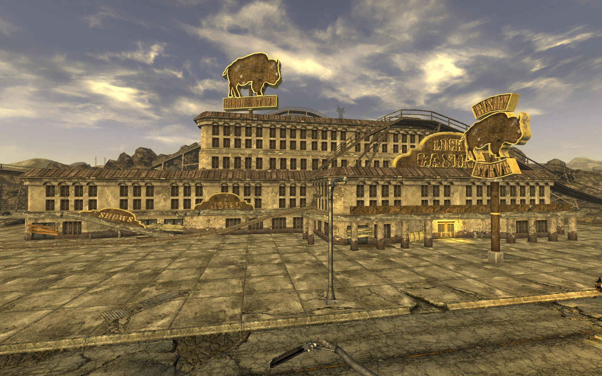

Primm (ロケーション)
プリム
大規模な居住地
派閥:
パウダーギャング
新カリフォルニア共和国 (NCR)
モハビ・エクスプレス
指導者:
マクベイン保安官 (故人)
脱獄囚のリーダー
その他 (プレイヤーの選択による)
商人:
ジョンソン・ナッシュ
登場:
Fallout: New Vegas
Fallout TVシリーズ
『Fallout: New Vegas』ローディング画面より
モハビ前哨基地を出発したNCRの旅行者が最初に立ち寄る場所であることが多いプリムは、ニューベガスを出発した多くの人々が「ザ・ハブ」へ戻るための長旅の資金がほとんど残っていないことに気づく場所でもある。
プリム（Primm）は『Fallout: New Vegas』におけるモハビ・ウェイストランドのロケーションです。また、Fallout TVシリーズのシーズン2のエンドクレジットおよび背景に登場しました。
大戦前後を問わず「貧者のラスベガス」として宣伝されてきたこの町は、23世紀に入って州間高速道路15号線（I-15）沿いという立地と、新カリフォルニア共和国（NCR）のコア・リージョンへ行き来するキャラバン交通を管理するモハビ前哨基地の近くにあることから、大きな経済的成功を収めました。
しかし2281年後半、近隣のNCR共同再教育施設（NCRCF）で起きた大規模な脱獄事件の影響がプリムにも及び、凶悪な脱獄囚たちが町を包囲。マクベイン保安官を殺害し、大半の住民を追い出し、一部を人質に取り、残された人々は奇跡かNCRの支援を待ちながら「ヴィッキ・アンド・ヴァンス・カジノ」に立てこもることを余儀なくされました。
背景
大戦前
大戦前のプリムは、ネバダ州クラーク郡に位置し、ロサンゼルスとラスベガスを結ぶ州間高速道路15号線沿いにある小さなリゾート地でした。たちまち「貧乏人のラスベガス」として評判を呼んだプリムは、カリフォルニアからの旅行客が道中で「シン・シティ」への味見をしたり、逆に帰りの道中で残った貯金を全てすり減らしたりする場所となりました。
このリゾートには魅力を高めるための一連の観光名所がありました。ボニーとクライドに対する南西部からの回答である無法者カップルに捧げられた「ヴィッキ・アンド・ヴァンス・カジノ」や、モハビ地域最大かつ最もガタガタなジェットコースター ”エル・ディアブロ” を誇る「バイソン・スティーヴ・ホテル＆カジノ」などが存在しました。
大戦後
核による終末の後、生き延びた人々やウェイストランダーたちはなけなしの稼ぎをギャンブルで浪費する以外に重要な関心事があったため、この町はかつての魅力の多くを失いました。それでもプリムは存続し、時間をかけて小さくしかし緊密なコミュニティを発展させました。
23世紀後半、NCRがカリフォルニアからモハビへ進出したことで、モハビ前哨基地に近いプリムは有望な交易の町となり、ニューベガスを行き来する民間や軍の往来の増加から恩恵を受けました。ニューベガスに辿り着けない、あるいは行きたくない人々のために、カジノ、ホテル、いくつかの店、そしてクーリエ（運び屋）の中継所を提供することで、「手頃なラスベガス」という魅力は復活したのです。南東にある隣町ニプトンとは異なり、町の保安官による能動的な法執行があったため、安全で休息できる小さな場所としての評判が保たれていました。

しかしプリムの幸運は、2281年、北東にあるNCR共同再教育施設での脱獄事件によって再び悪い方向へ向かいました。
その後すぐに、脱獄囚たちはI-15沿いで破壊と略奪をもたらし始め、次第にプリム自体を浸食していきました。運び屋（主人公）がグッドスプリングス郊外で襲撃される約1ヶ月前、より組織化されたパウダーギャングとは異なる脱獄囚のグループが町を襲撃し、保安官とその妻を就寝中に殺害するとともに、唯一の副保安官であるビーグルをバイソン・スティーヴ・ホテルに人質に取りました。そしてプリムの経済を効果的に支配下においたのです。
残された住民たちは寂れたヴィッキ＆ヴァンス・カジノに立てこもり、膠着状態となりました。しばらく持ちこたえ、囚人たちが中に押し入ってこないようにするだけの食料と銃はありましたが、町を奪還するだけの人力はありませんでした。
幸運にもハイウェイにたどり着けた者たちは町を完全に見捨てました。サミュエルとミシェルのカー父娘のような商人たちは損失を諦め、ニューベガスに近い188交易所に拠点を移しました。
その後1ヶ月にわたり、プリムは囚人たちに支配された無法で一文無しの地獄と化しました。
囚人たちは数人の仲間をバイソン・スティーブ・ホテルの周辺に配置し、町をパトロールさせ、I-15を北上してニューベガスへ向かうキャラバンに嫌がらせをしては略奪を行っています。バイソン・スティーブ・ホテル自体が彼らの即席の拠点となり、町をさらに破壊して領域を広げる計画が立てられています。
NCRは町の東端に象徴的な前哨基地を維持しており、第5陸軍大隊第1中隊のヘイズ中尉が指揮を執り、囚人たちの監視を行っていました。NCRはニプトンを失ったこともあり、この町をモハビ南部の素晴らしい戦略拠点と考えていましたが、ヘイズは囚人たちを撃退する計画に対して「中隊の人員も火力も不足している」と嘆いていました。彼はあと1小隊でも増援があれば形成を逆転でき、トルーパーたちがプリムを強襲して奪還できると述べていますが、モハビ前哨基地への要請が聞き入れられることはありませんでした。
レイアウト
モハビの中央から南西部に位置するプリムの景観は、いくつかの空き家の牧場、メインストリートと店舗の瓦礫、そして町の南西に設置された小さなNCRのキャンプによって構成されています。このキャンプは、既にパウダーギャングの手に落ちたプリムの保護というよりは、囚人たちがNCRのモハビ前哨基地がある南へさらに押し進むのを防ぐために機能しています。
完全な形で残っている建物のほとんどは町の東部にあり、それらは金属製のフェンスで完全に囲まれています。フェンス越しに脱獄囚と交戦することも可能ですが、町の中に侵入するには西側か南側から接近する必要があります。
入り口に近づくと、町の中心部が囚人たちに占拠されており危険な場所であると警告するNCRトルーパーに遭遇します。町外れにある陸橋は、囚人たちのテリトリーとNCRの野営地を隔てるバリケードとして機能しています。
放棄されたジェットコースター「エル・ディアブロ」がバイソン・スティーブ・ホテルの上や周囲を走っており、コースターのレール上やその周辺には複数の囚人が配置されています。町に入った運び屋は、囚人たちに捕らえられたビーグル副保安官がいるバイソン・スティーブ・ホテルに直接踏み込むか、または通りを渡って非敵対的な市民たちが避難しているヴィッキ＆ヴァンス・カジノに向かうことができます。
町の南東端には4つの住宅（Primm house）があります。二つのカジノの向かいにあるのが「モハビ・エクスプレス（Nash residence）」です。この場所のテーブルの上にはアイボットの「ED-E」があり、修理することでクエスト「ED-E My Love」を開始できます。
そしてその家の外には、運び屋の「ダニエル・ワイアンド」の遺体が転がっています。
主な建物
- バイソン・スティーヴ・ホテル (Bison Steve Hotel)
- ヴィッキ・アンド・ヴァンス・カジノ (Vikki and Vance Casino)
- モハビ・エクスプレス事業所 / ナッシュ邸 (Mojave Express / Nash residence)
- ビーグル副保安官の家 (Deputy Beagle's residence)
- プリム保安官事務所 (Primm sheriff's office)
- エル・ディアブロ (ジェットコースター)
代表的なアイテム
- サンセット・サルサパリラ・スターキャップ (2枚)：1枚は町の南東にある家の中（ラジオ近くの本棚の上）。もう1枚はバイソン・スティーヴ・ホテルの1階ロビーのサイドテーブルの上。
- モハビ・エクスプレス配送命令書 (4 / 6)：ナッシュ邸の玄関外にあるダニエル・ワイアンドの死体から回収。
- ラッキー (Lucky)：.357マグナムリボルバーのユニークバリアント。バイソン・スティーブ・ホテルの1階ギフトショップにあるカウンター裏のフロア金庫（Hardロック）の中。
- 保安官のダスターコート (Sheriff's duster)：ユニーク防具。保安官事務所のベッドの足元付近（マクベイン夫妻の死体の傍）にある。クエスト『My Kind of Town』を完了すると消滅してしまう。
開発秘話
- ゲーム内のプリムは、ネバダ州クラーク郡に実在する町「Primm」をモデルにしています。
- 開発中、プリムは尋常ではなく多くのメモリを消費するエリアになってしまい、グリッチやクラッシュのリスクを軽減するためにパッチにより様々なコンテンツ（NPCやオブジェクト）を削除せざるを得ませんでした。これについて本作のディレクターであるジョシュア・ソーヤーは、ゲーム実況中のインタビューで「非常に残念だった。だからこそIncreased Wasteland SpawnsなどのMODを入れると世界がより生き生きと感じられるんだ」と述懐しています。
感想
グッドスプリングスを出発し、大半のプレイヤーが最初にたどり着くことになる「最初の大きな試練」の町、それがプリムです。
廃墟と化したジェットコースターが象徴する世紀末のテーマパーク感と、パウダーギャングたちとの最初の本格的な激突、そして「モハビには真の法と秩序は存在せず、誰を新たな法（保安官）に据えるかはプレイヤー次第である」というNew Vegasを象徴する究極の選択を叩きつけてきます。
TVシリーズでもついに名前が登場し、シーズン2では再び映像として我々の前にその荒涼とした（あるいは復興した？）姿を見せてくれることが期待されています。ED-Eとの運命の出会いの場所でもあり、全運び屋の心に深く刻まれたロケーションです。
> COMMENTS